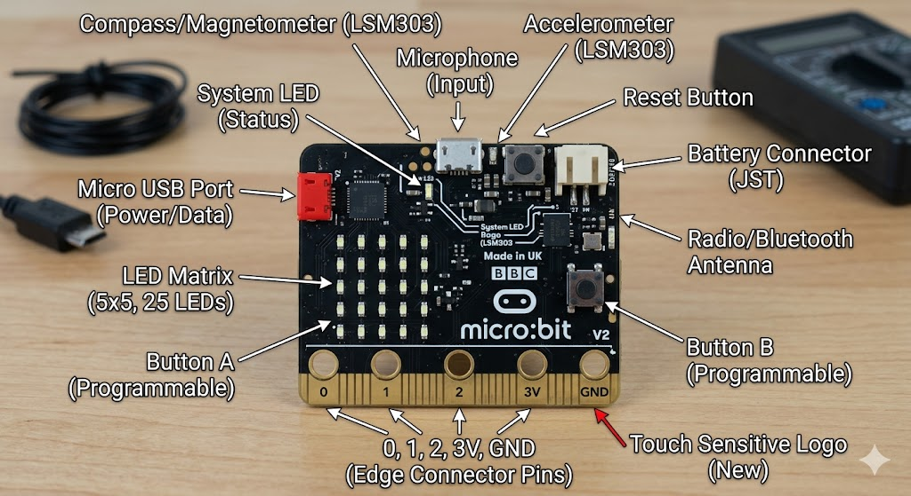
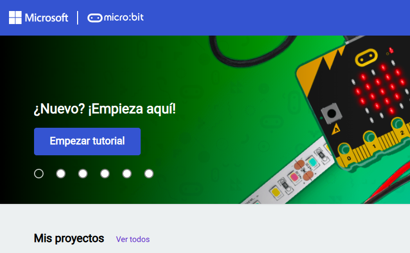

Text
¡Te damos la bienvenida al curso de Micro:bit con MicroPython!
El universo de la tecnología y la programación está lleno de posibilidades, y la mejor manera de entenderlo es creando tus propios proyectos. Este curso está diseñado para guiarte paso a paso desde los conceptos elementales hasta el desarrollo de tus primeras aplicaciones de hardware, utilizando herramientas potentes y accesibles del sector educativo.
Comenzaremos explorando a fondo qué es la BBC micro:bit. Se trata de una pequeña tarjeta programable, del tamaño de una tarjeta de crédito, diseñada para enseñar programación de una manera física y visual. A pesar de su tamaño compacto, este dispositivo cuenta con una gran variedad de componentes internos: una matriz de luces LED para mostrar mensajes, botones interactivos, sensores de luz, temperatura y movimiento, e incluso conectividad inalámbrica. Es, en esencia, una computadora de bolsillo que te permite interactuar de forma directa con el entorno real.

Para dar tus primeros pasos con comodidad, no será necesario que cuentes con la tarjeta física desde el primer día. Aquí es donde entra en juego el emulador de MakeCode. Aunque este entorno es famoso por su sistema de bloques, nosotros aprovecharemos su potente simulador en línea como un laboratorio virtual. Este emulador te permitirá visualizar en tiempo real cómo se comporta tu código directamente en una pantalla digital, facilitando el testeo y la corrección de errores antes de dar el salto a la placa física.

El verdadero corazón de nuestro aprendizaje será MicroPython. ¿De qué se trata exactamente? Es una versión optimizada del lenguaje Python 3, adaptada específicamente para funcionar en microcontroladores con recursos limitados. Python es uno de los lenguajes más utilizados, limpios y demandados del planeta, y MicroPython te ofrece toda esa robustez en un formato ideal para el hardware. Durante las lecciones, aprenderás cómo utilizarlo: desde la sintaxis básica y lógica de control, hasta la lectura de los sensores integrados y la creación de animaciones personalizadas en la tarjeta.

Este prefacio es solo la puerta de entrada a un viaje dinámico donde la teoría se transforma de inmediato en práctica. No importa si nunca antes has escrito una línea de código o si ya posees nociones de informática; este espacio está pensado para que experimentes sin miedo, superes desafíos lógicos y descubras el increíble universo de la computación física y los sistemas embebidos.
¡Te damos la bienvenida al curso y prepárate para programar el futuro!